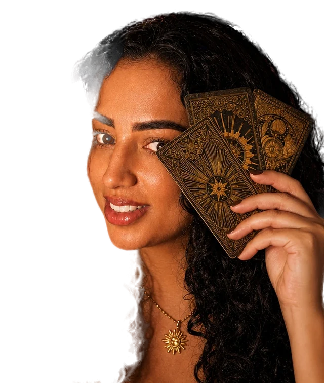

Taróloga e terapeuta holística
Clareza para seus próximos passos.
Tarô e terapia holística para escolhas conscientes.
- Mais de 10.000 atendimentos realizados
- Direcionamento antes, durante e depois
- Online de onde você estiver
Atendimentos
Sete leituras, cada uma com um propósito.
Todas acontecem pelo WhatsApp, com envio de fotos e áudios. Escolha a que faz sentido para o seu momento.
Perguntas
R$40Uma dúvida pontual, com resposta objetiva e direta. Retorno em até 48h.
Quero essa leituraLeitura Mensal
R$90As energias dos próximos 30 dias: profissional, sentimental e desenvolvimento pessoal.
Quero essa leituraJogo dos Parceiros
R$135Leitura com foco exclusivo na vida afetiva: o que está posto e o que pode mudar.
Quero essa leituraLeitura de Ciclo
R$140Análise numerológica do ciclo atual: saúde, social, financeiro, profissional, relacionamentos e espiritual. Inclui PDF com métodos holísticos e carta conselho.
Quero essa leituraTrono do Imperador
R$140Foco profissional: energia atual, obstáculos e caminhos de sucesso. Inclui aconselhamento profissional.
Quero essa leituraCruz Celta
R$180Autoconhecimento profundo: passado, futuro, influências e bloqueios do seu momento.
Quero essa leitura Mais completoMesa Real
R$250Dois oráculos e todas as áreas da vida: profissional, amorosa, financeira e mais. Inclui PDF com dicas holísticas.
Quero essa leituraComo funciona
Do primeiro "oi" até a sua leitura.
Escolha o atendimento
Veja as leituras e me chame no WhatsApp com a que faz sentido para você agora.
Confirme o horário
Agendamos juntas e eu reservo o seu horário.
Receba a leitura
O atendimento chega pelo WhatsApp, com fotos e áudios, antes, durante e depois.
Dúvidas frequentes
O que costumam me perguntar.
Como recebo a consulta?
Todo o atendimento é pelo WhatsApp, com fotos e áudios ao longo da leitura.
Com quanto tempo preciso agendar?
Com pelo menos 24 horas de antecedência. O horário só fica reservado depois do envio do comprovante do PIX.
Sobre
Tarô levado a sério.
Sou taróloga e terapeuta holística, e o meu trabalho é sem sensacionalismo: o tarô como ferramenta de clareza, não de susto.
Se algo está pedindo clareza, é por aqui.
Me conta o seu momento no WhatsApp. Eu te ajudo a escolher a leitura certa.